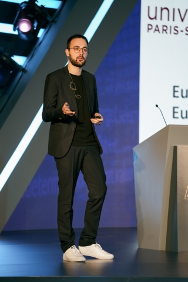

zero → company
Co-founded Equall. First legal-AI company on a domain LLM. Raised VC. Trained SaulLM (7B → 141B). Shipped to Big Law.
Built Equall — legal AI, VC-backed, SaulLM. Built the CentraleSupélec NLP lab from zero. Now training frontier multimodal at Cohere.

Models for documents, video and audio. ColPali — visual document retrieval used in production at NVIDIA, Jina, Amazon. Recognized as a multimodal breakthrough in the State of AI Report 2024. BidirLM pushes it to omnimodal encoders (text · image · audio).
SaulLM (7B → 141B) — the first LLM line built for legal. Powered Equall's M&A due-diligence product shipped to Big Law. Now extended to autonomous legal agents.
Open multilingual models from Europe — from a bilingual French-English LLM to 22B-scale generation. Plus a contribution to BLOOM (176B), the open-science landmark.
Metrics and benchmarking for generative AI. InfoLM — 🏆 AAAI 2022 Outstanding Student Paper, 1 of 9,020 submissions.
→ full list on Google Scholar (60+ papers)
PhDs advised at the CentraleSupélec NLP lab — and where they landed.